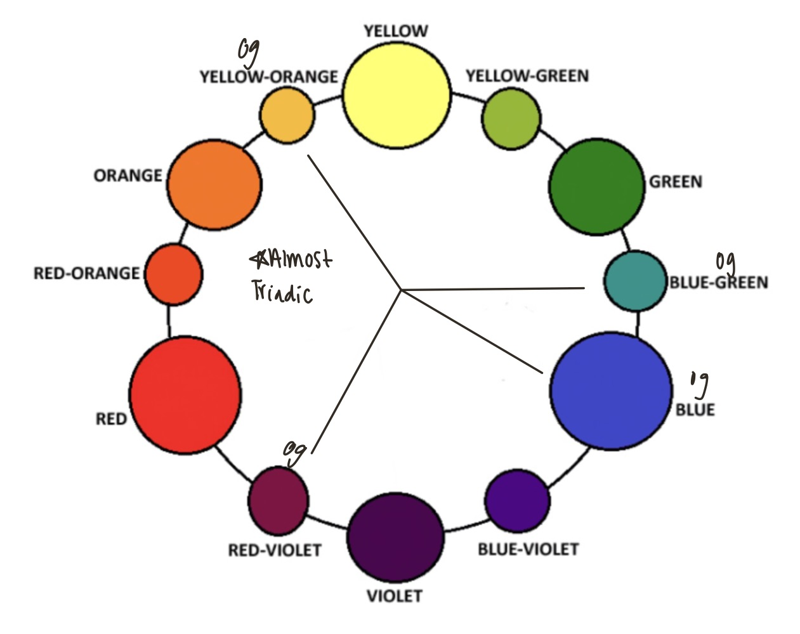
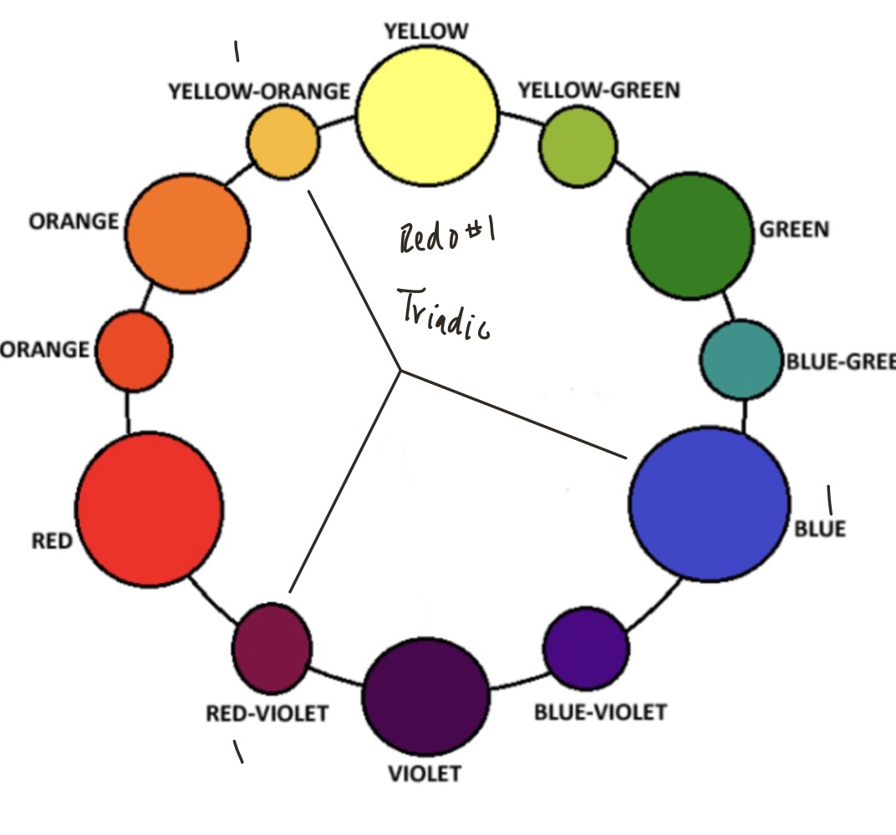
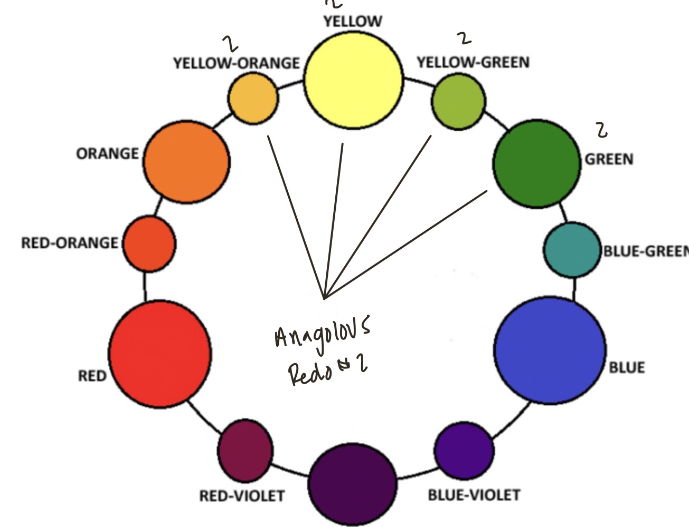
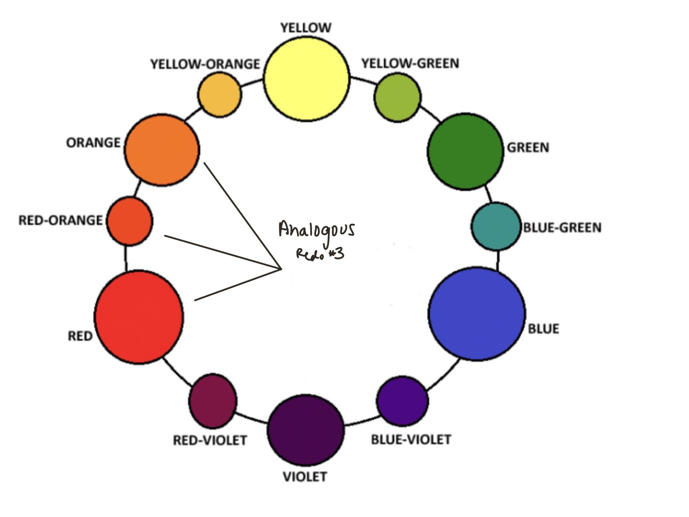
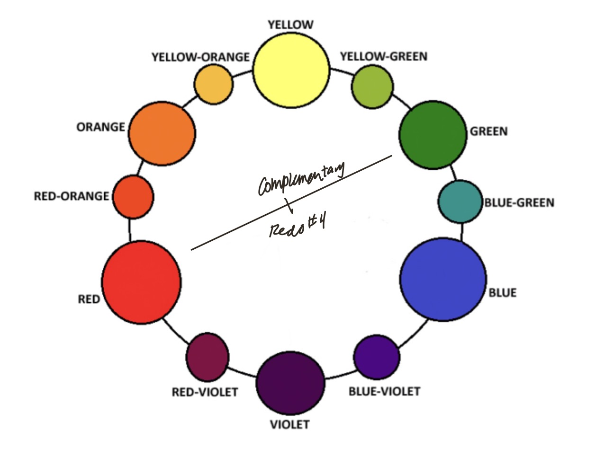

drinkbai.com

Original Design:
The color scheme of the original design is almost triadic. There are heavy influences of yellow-orange,
red-violet, and blue-green, which are a triad on the color wheel. However, the frequent use of blue and
navy
offset the triadic scheme and make the colors less cohesive together.
The personality of the original website is overwhelming to users because of the lack of uniformity.
Well,
the blues and greens played very well into the calming and energetic balance that the company stands
for, the
new flavor, being a golden yellow accent on many of the pages made for an uncomfortable color transition
that
I think the design was ill prepared for. The designers want their consumers to feel refreshed, trendy,
and
healthy, which the blue green and purples played very well into, whereas the yellow brought a bubbly
vibrancy
that didn't match the vibe of the rest of the page, despite it being a great color on its own to
represent the
youthfulness of the company’s values.

Redo 1:
The first review shows a triadic color combination, which was what we because of the And red violet
there are
two tertiary colors with a blue instead of the blue green to be the official triadic. However, it does
create
a better sense of unity and cohesiveness than the original combination. There is a strong focus on the
blue
and red violets with yellow orange, being the accent color to show the new flavor, which is very similar
to
the original design.
Of this scheme is a blend of professionalism and authenticity, which, in itself is an interesting
dynamic.
The sophistication and classiness of purple meets the emotional and tranquil, blues, to create a balance
of
stability and luxury, in the eye of the consumer, the red violet tones with the yellow provide a sense
of
slight complementary Where the accent draw the eye to the new product rather than having it blend in
with the
background. This scheme is much more calming and relaxing than the original, vibrant and overwhelming
layout.

Redo 2:
The second redo is analogous using yellow orange to green tones, focusing on the vibrancy and
playfulness of
the yellows and greens.This dynamic is an eye catching golden yellow with warm and vibrant qualities,
combining with the burst
of fresh, natural energy from the green, which played together very nicely, since they are so close on
the
color wheel, and create a feeling of excitement, youthfulness, and vitality that leans into the health
mindset
of the company.

Redo 3:
The third redo is also analogous, but using reds to oranges, playing into that warmer color scheme
compared to
the very cool toned original page which changes the emotional response that the page would evoke.
The pink Sun combination brings serenity and illusions to a sunset, as well as bringing joy,
optimism and
relaxation. These colors are more associated with positivity and happiness, rather than simply
tranquility and
peacefulness the pink can symbolize something sensitive whereas the yellow can focus on the vibrancy and
cheerfulness of the website. The balance between these two separate forces combined into a joyful,
slightly
romantic vibe that the product can adhere to.

Redo 4:
The fourth redo uses a complementary color scheme, focusing on pinks and greens, which fall into the red
and
green sectors of the color wheel. My goal redesign was to avoid the feeling of colors are also in
contrast
that Wood would draw the audiences attention.
The green is very earthy and natural bringing the customer to think of the products as organic and
clean.
Seeing as it is a health drink company, and the pink plays into the vibrant and intimate size of a
customers
mindset, giving them a deep sense of connection to the website. Dichotomy of opposite colors next to
each
other also plays an interesting role in where the viewer is looking. Between the colors attribute to the
original color scheme that fades from blue into a soft green, but takes away the tranquility and slow
calm
that Blue brings and replaces it with a high energy rooted in a deep green.
